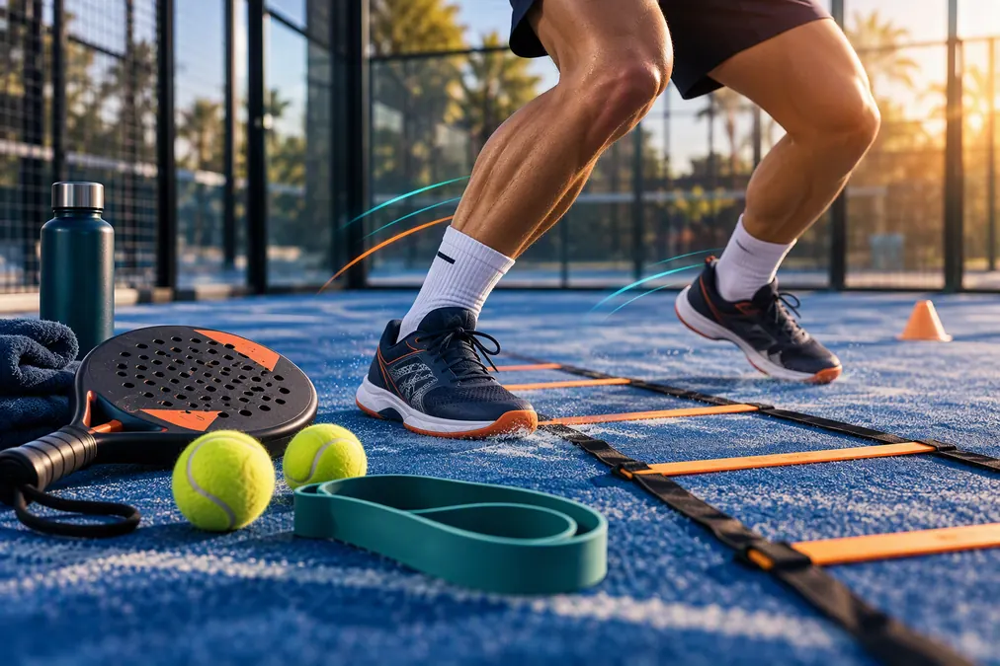
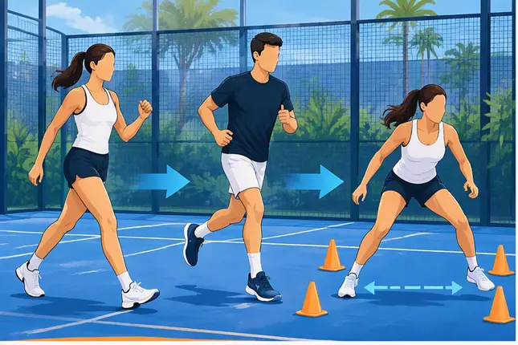
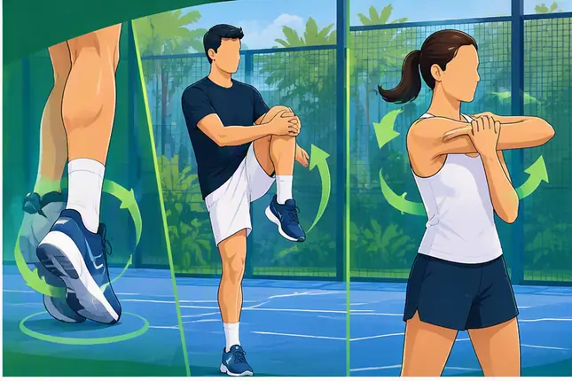
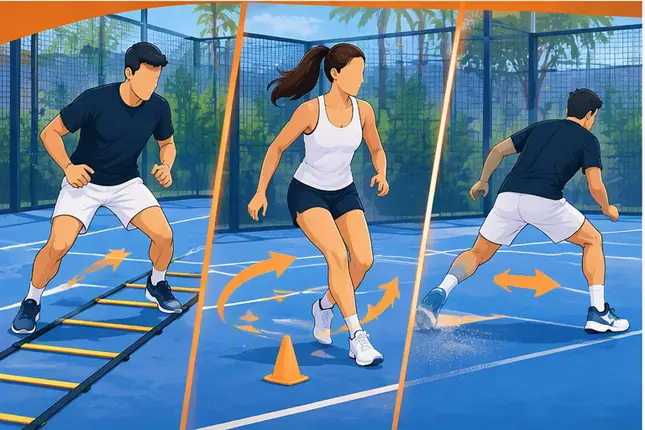
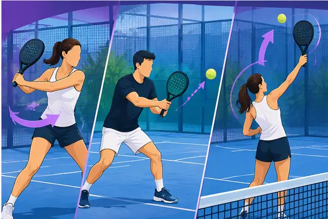

Échauffement padel : routine progressive de 10 minutes avant de jouer

On arrive au club à la dernière minute, on paie sa partie, on tape trois balles de fond de court… et le match commence. Pourtant, le padel est un sport dynamique et asymétrique qui sollicite notamment les épaules, les coudes, les genoux et les chevilles.
Les changements de direction brusques et les frappes au-dessus de la tête demandent un corps progressivement préparé. Cette routine de 10 minutes aide à éviter un démarrage trop brutal, sans jamais supprimer totalement le risque de blessure.
Avant de commencer : quand demander un avis médical ?
L'Assurance Maladie recommande de tenir compte de son état de santé avant de commencer ou d'augmenter une activité physique. Certaines situations, comme une douleur thoracique, des pertes d'équilibre, une maladie chronique, un problème articulaire ou tendineux susceptible d'être aggravé, justifient un avis médical avant d'intensifier la pratique.
Routine express : 10 minutes
Étape 1 — Mise en mouvement générale, 2 minutes

- marche rapide puis petit trot sans chercher la vitesse ;
- pas latéraux dans les deux sens ;
- deux à trois accélérations progressives sur quelques mètres ;
- respiration régulière, sans blocage.
Étape 2 — Mobilité dynamique, 2 minutes

- cercles de chevilles contrôlés ;
- flexions légères des genoux dans une amplitude confortable ;
- ouverture de hanches et rotations douces du tronc ;
- cercles d'épaules, coudes et poignets.
Évitez les mouvements rapides en butée. La mobilité recherchée doit rester confortable et directement utile aux gestes de jeu.
Étape 3 — Activation padel, 3 minutes

- petits pas d'ajustement en position d'attente ;
- déplacements avant-arrière avec freinage progressif ;
- pas croisés et reprise d'appuis ;
- mouvements de volée sans balle, amplitude modérée ;
- simulation de bandeja sans chercher la puissance.
Publicité responsive intégrée
Étape 4 — Raquette et balle, 3 minutes

- mini-échanges dans le carré de service ;
- volées lentes et contrôlées ;
- quelques lobs sans forcer ;
- sorties de vitre à vitesse réduite ;
- deux ou trois services progressifs, sans chercher la vitesse maximale.
Version complète : 15 minutes avant un match intense
Pour un tournoi, une reprise ou une partie exigeante, ajoutez cinq minutes : deux minutes de déplacements multidirectionnels, deux minutes de séquences fond-filet et une minute de frappes au-dessus de la tête à intensité croissante. Gardez les smashs puissants pour la fin, seulement si aucun inconfort n'apparaît.
Faut-il utiliser un élastique ?
Si vous en avez une dans le sac, une bande légère peut servir à activer les muscles autour des épaules et du haut du dos. Elle n'est pas obligatoire. Utilisez une résistance faible, un mouvement contrôlé et évitez les amplitudes douloureuses. Une bande trop résistante transforme l'échauffement en séance de force et peut fatiguer avant le match.
Échauffement selon la situation
Après une journée assise
Allongez la mise en mouvement générale et la mobilité des hanches et du thorax. Les premières frappes doivent rester souples.
Par temps froid
Prévoyez quelques minutes supplémentaires et gardez une couche de vêtement pendant le début de la routine. Le passage à l'intensité doit être encore plus progressif.
Par forte chaleur
Réduisez la durée et l'intensité, recherchez un lieu plus frais, faites des pauses et buvez régulièrement. L'Assurance Maladie conseille de reporter ou d'adapter l'activité lorsque la chaleur et l'humidité rendent l'effort risqué.
Avant plusieurs matchs
Ne répétez pas une routine longue à pleine intensité. Entre deux rencontres, restez mobile, hydratez-vous et effectuez une remise en route courte avant de reprendre.
Erreurs fréquentes
- commencer par des smashs puissants ;
- faire uniquement des étirements statiques longs ;
- confondre échauffement et séance de renforcement ;
- ignorer une douleur parce que le match commence ;
- oublier les déplacements latéraux et les freinages ;
- copier une routine sans l'adapter à son état du jour.
Après la partie : retour au calme
Marchez quelques minutes, hydratez-vous et laissez redescendre progressivement l'intensité. Des mouvements doux peuvent être confortables, mais un étirement ne doit jamais provoquer de douleur. La récupération dépend aussi du sommeil, de l'hydratation et de la charge globale de pratique.
Questions fréquentes
Dix minutes suffisent-elles ?
Pour une partie loisir, dix minutes progressives constituent une base pratique. La durée doit augmenter si le contexte, l'âge, le niveau d'intensité ou l'état de santé le nécessitent.
Peut-on s'échauffer uniquement en échangeant ?
Les échanges lents contribuent à l'échauffement, mais ils préparent moins bien les déplacements, freinages et changements de direction. Ajoutez au moins une courte phase sans balle.
Les étirements empêchent-ils les blessures ?
Aucune routine ne garantit l'absence de blessure. L'échauffement contribue à une préparation progressive, mais le risque dépend aussi de la charge, de la fatigue, de la technique, du terrain et de l'état de santé.
Le kit indispensable dans le sac de padel
Un jeu de bandes de résistance peut être un accessoire pratique pour réaliser certains mouvements progressifs d’échauffement.